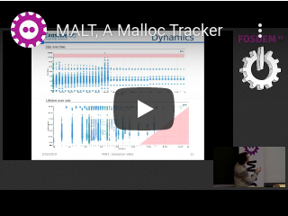

Research papers:
Previous work in particle physics:
Student reports for Master 2 courses in computer science.
You can find most of the papers I was reading on this page if you want a start point to join my research topics !
Posters presented:
Here some talks which were webcasted.
|
Tests unitaires, une philosophie et une aide face à son logiciel. Les Jeudis Gray Scott 2024 - LAPP / CNRS |
Allocations mémoires, pourquoi et comment profiler (MALT, NUMAPROF) Les Jeudis Gray Scott 2024 - LAPP / CNRS |
|
Memory management and OS paging for high performance computing Minet 2018 - Evry, Telecom Paris Sud |
OS performance impact IN2P3 summer school "Méthodologie et outils d'optimisation en développement logiciel" Fréjus, 2012 |
|  | |
|
MALT & NUMAPROF, Memory Profiling for HPC Applications FOSDEM 2019 - Brussel, ULB |
FOSDEM 2019 - Brussel, ULB |
|
TEDx: Tests unitaires vous dites ? Université de Savoie Mont Blanc 2019 |
I like a lot making talks on subject I'm interersted in. If you are interested by some of the listed topics, do not limit yourself to contact me and we can see how to proceed.